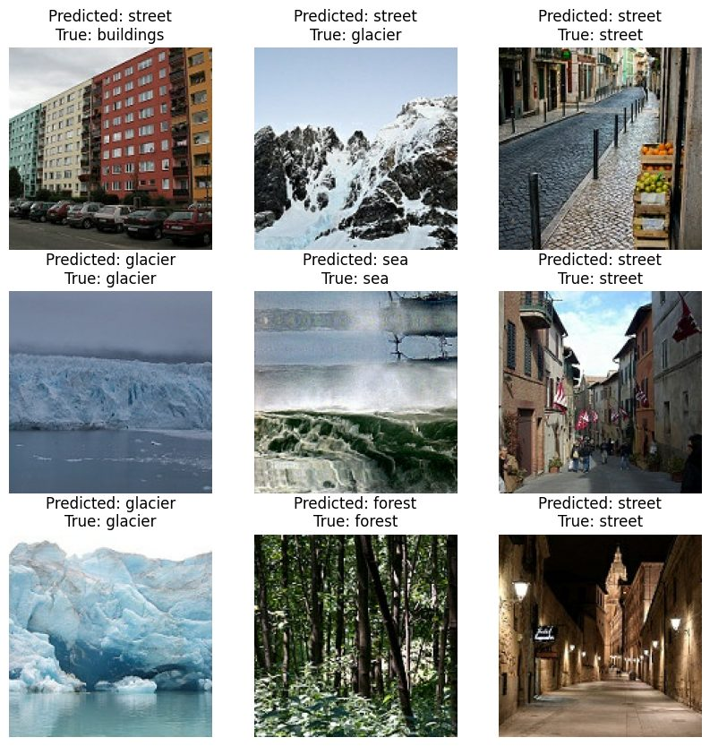
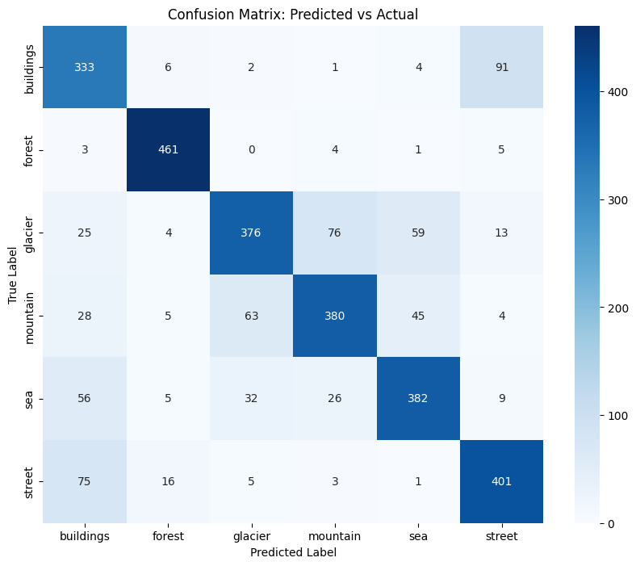

01 · ProblemSome categories genuinely look alike
Automatically tagging images is useful anywhere photos pile up faster than people can sort them. The hard part is not the easy classes; it’s the ones that share colours, textures and shapes.
This project classifies about 17,000 photos into six scene types (buildings, forest, glacier, mountain, sea, street) using the public Intel Image Classification dataset. The goal was a compact model that separates the look-alikes while staying small enough to train on a free GPU.

02 · ApproachA compact network, improved step by step
- Data: 12,632 training, 1,402 validation and 3,000 test images at 150×150 pixels.
- Model: three convolution-and-pooling blocks (32, 64, 128 filters), global average pooling, a 128-unit dense layer with 50% dropout, about 110,000 parameters in total.
- Iteration: I refined the model over several versions, taking test accuracy from 76% to 81%.
- Experiment: retrained the same network with data augmentation (flips, rotation, zoom) to test whether it improved generalisation.
- Diagnosis: confusion matrix and per-class precision, recall and F1.
03 · AnalysisWhere the model gets confused

- Buildings ↔ street: 91 buildings labelled street, 75 streets labelled buildings.
- Glacier ↔ mountain: 76 glaciers labelled mountain, 63 mountains labelled glacier.
- Forest was almost always right (F1 0.95). Its texture is distinctive.
04 · Result & insight81% overall, and a clear map of what’s left
| Model | Test accuracy |
|---|---|
| Baseline CNN | 81.3% |
| CNN + data augmentation | 77.8% |
Augmentation didn’t help here. Training and validation accuracy were already close, so the baseline wasn’t overfitting, and augmentation mainly slowed learning within ten epochs. The remaining errors are concentrated in two pairs of look-alike classes, which tells you where to focus next: transfer learning from a pretrained network, and training longer.
05 · Why it mattersWhy the diagnosis matters more than the headline
An 81% figure alone doesn’t tell a business whether the model is usable. The confusion matrix does: if confusing buildings with streets is harmless for the use case, the model may already be good enough; if it isn’t, you know exactly which classes need more data or a stronger model.